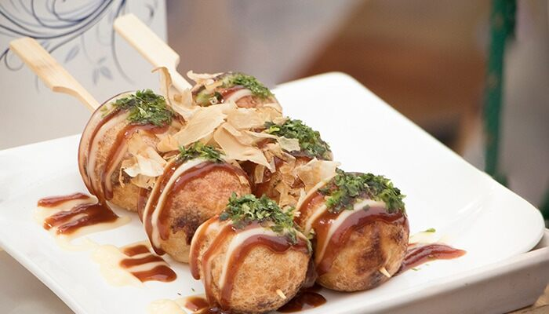

Una comida callejera muy común en tierras niponas es el conocido como "Takoyaki". Esta plato consiste de una masa en forma de bola
hecha con harina y especias que contiene un pequeño pedazo de tentaculo de pulpo. El Takoyaki se suele servir en bandejas de carton
recubierto con salsa de soja, "bonito" reseco, alga en polvo, etc.
Es tipico la region de Kansai, al sureste de la isla principal del Japón, sin embargo es comun verlo en todo el pais, sobre todo
en puestos callejeros por la sencillez de su preparacion. Acá abajo voy a dejar un mapa de la region de Kansai, asi como un video de la receta:

Ingredientes (para 3-4 personas)
225 gr. de Harina 0000.
1 Huevo.
700 cc de Agua.
100 gr. de pulpo (cortado en trozos chicos).
un cuarto (1/4) de Repollo.
media (1/2) Cebolla.
Tenkasu, que es el aceite usado luego de freir tempura (opcional).
Jengibre (c/n).
Salsa de Takoyaki (opcional, se puede condimentar como a uno le guste).
Katsuobushi, que es bonito seco (opcional).
Aonori, o Alga Nori en polvo (opcional).
Preparcaion paso a paso
Preparar los ingredientes solidos. Cortar el pulpo para que su tamaño coincida con el del Takoyaki, picar el repollo, la cebolla y el jengibre.
En un bowl, añadir la harina, el huevo y el agua. Mezclar hasta formar una pasta cremosa, no muy liquida.
A la mezcla agregarle un poco del aceite tenkasu, tambien incorporar el jengibre, la cebolla y el repollo.
Preparar el molde de takoyaki, en caso de no tenerlo pude darsele la forma que a uno mas le guste, al final va a quedar como una tortilla.
Una vez el molde este aceitado y caliente, hay que poner un poco de la masa, una vez cocinada, colocar un pedazo del pulpo y un poco mas de masa, cuando el lado de arriba este listo, con un pincho darlo vuelta y formar un perfecto circulo.
En caso de no usar molde, mezclar el pulpo en la masa y cocinar todo como una tortilla.
Una vez cocinados, servir en un plato y poner encima de ellos los condimentos.
Por acá voy a dejar un video con una receta alternativa: